Ensembles, Epistasis and Evolution
Mike Harms
University of Oregon
Gaining evolutionary insights from folding.
How do events alter future outcomes?

How do events alter future outcomes?

How do events alter future outcomes?

How do the physical properties of proteins shape their evolution?
Thermodynamic ensembles create long-term evolutionary memory
Evolutionary memory: the case of oseltamivir resistance in H1N1 influenza
- In 1991, the H274Y mutation to an influenza protein was shown to compromise viral fitness
- In 2008, H274Y entered the H1N1 population and conferred resistance to the drug oseltamivir
- Between 1991 and 2008, mutations accumulated that offset the deleterious effect of H274Y.
Bloom et al. (2010) Science 328:1272
Evolutionary memory: the effect of a mutation depends on previous substitutions
(epistasis + time)
Memory can be quantified by decomposing a mutant cycle
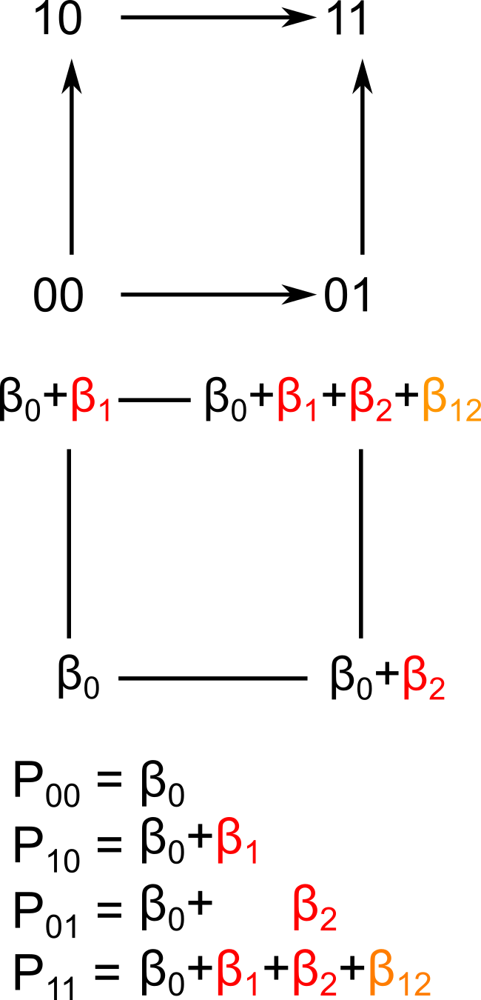
Memory arises from unfolding free energy

Memory arises from unfolding free energy

But things need not be so simple...
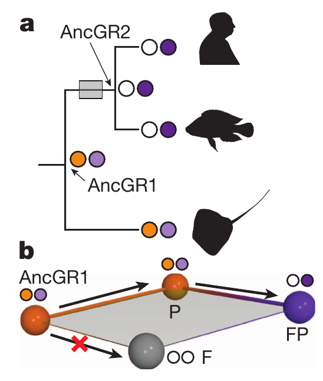
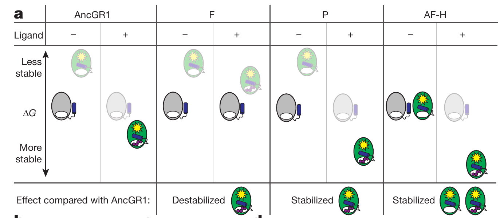
Evolution involves more than two steps...

...and protein function is determined by more than two states.
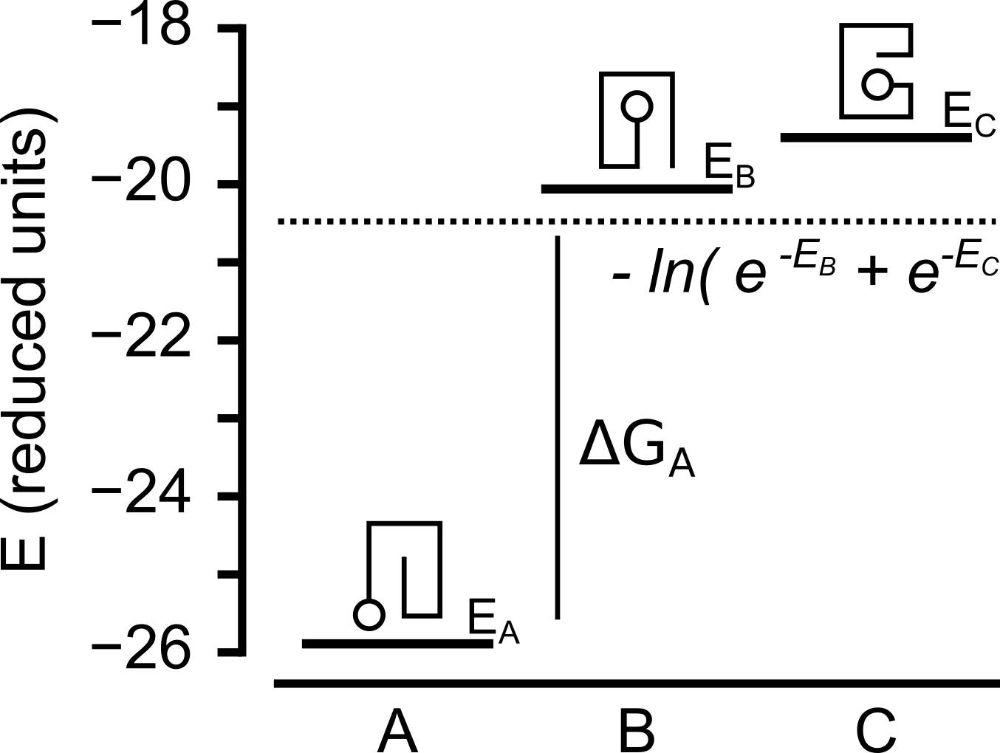Expanded sequence space creates possibility for "long-term" memory.
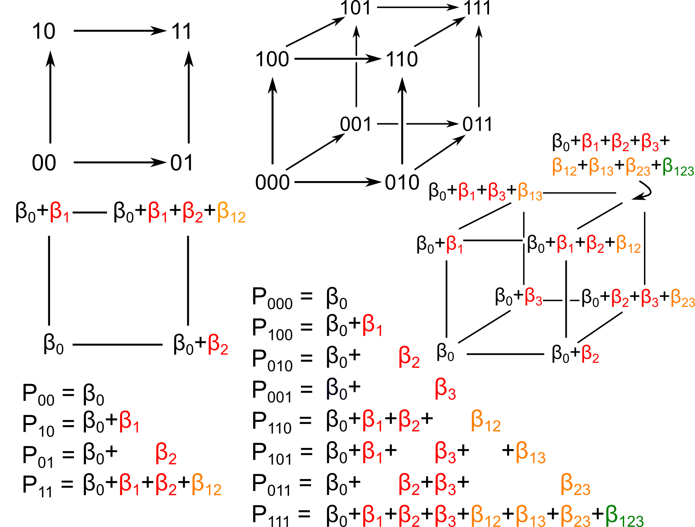
So what? How could more than three residues interact, anyway?
Mutations affect multiple states in an ensemble
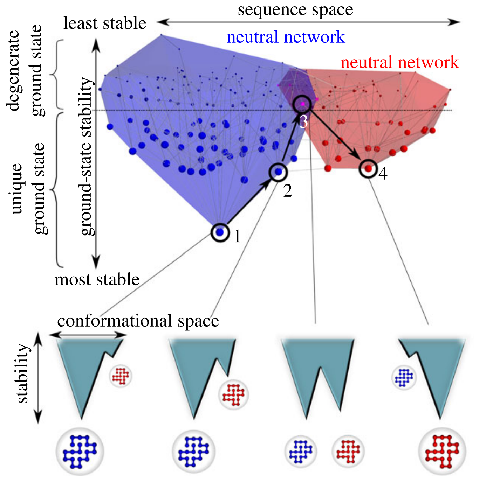
Sikosek & Chan (2014) J Roy Soc Interface 11:20140419Some implications:
A mutation re-weights every state in the ensemble
Every sequence will have a unique ensemble
Maybe every mutation could matter?
Approach: build a high-order mutant cycle of thermodynamic ensembles and measure memory
Wright (1932) Proceedings of the Sixth International Congress of Genetics 356
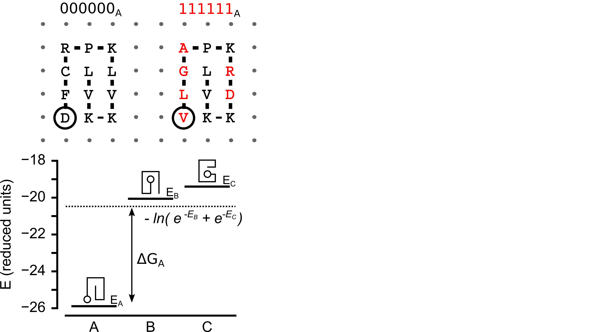
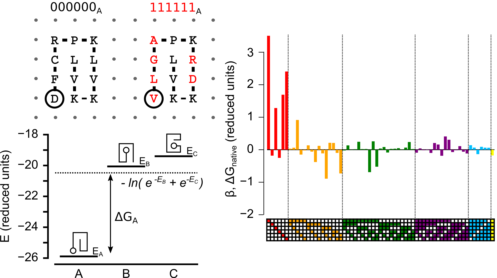
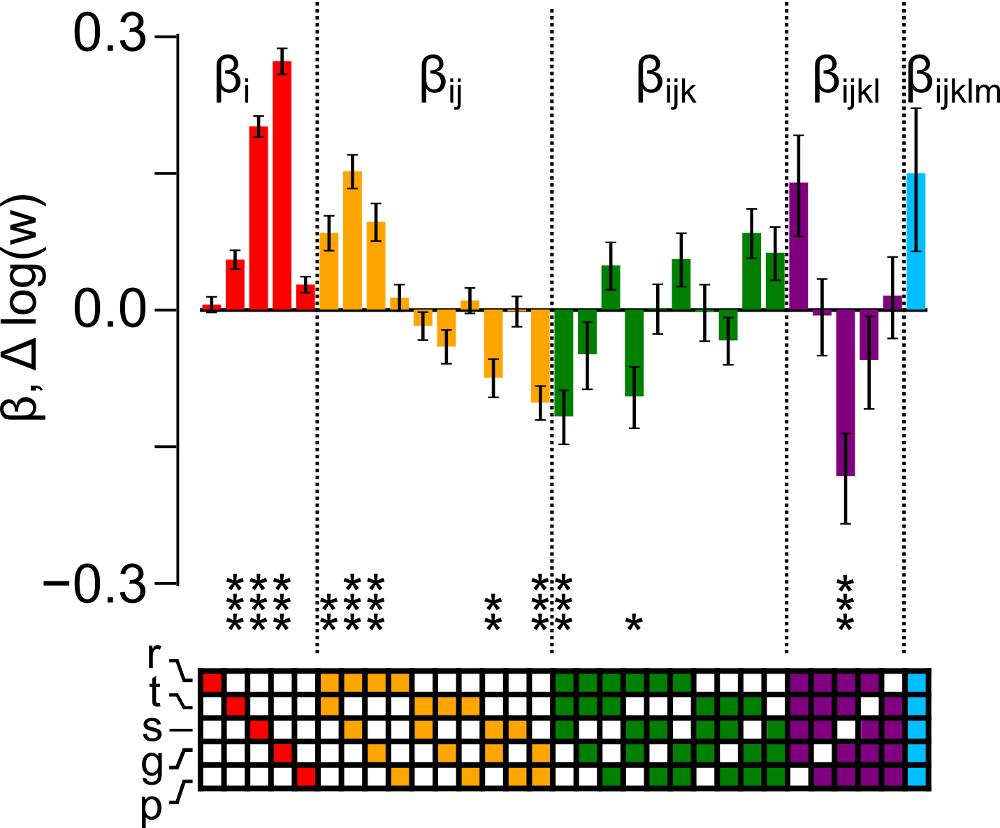
Can we see this experimentally?
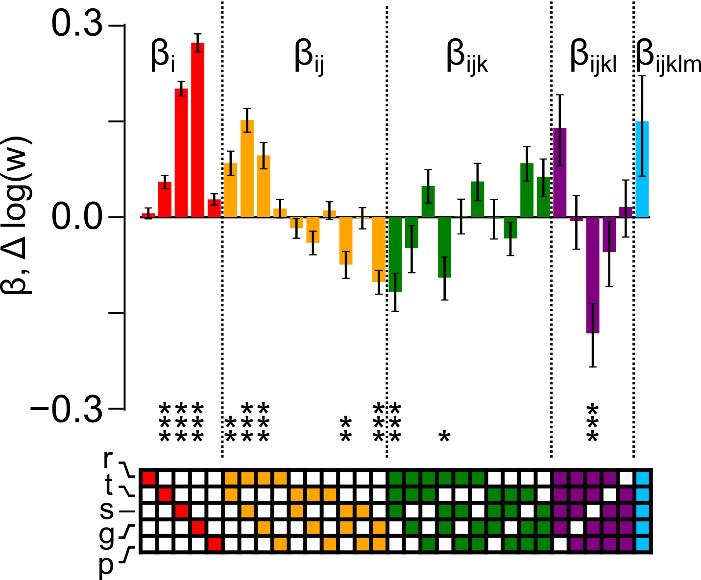
Does it matter for evolution?
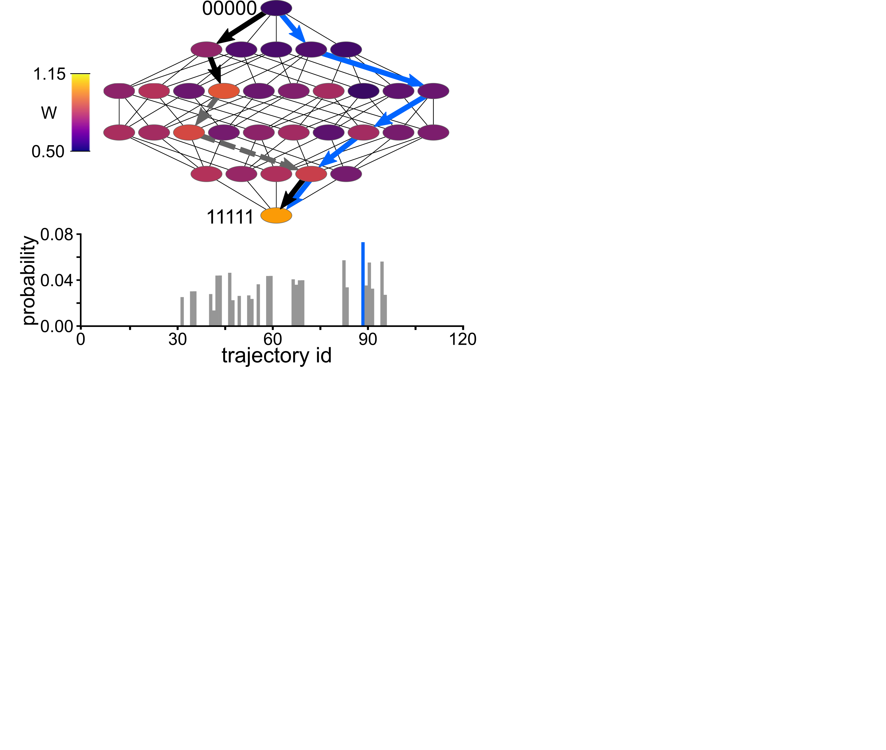
Does it matter for evolution?
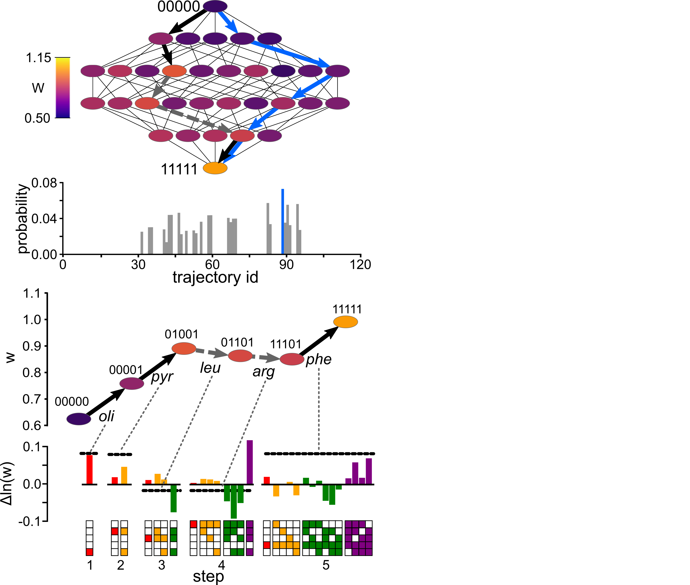
Does it matter for evolution?
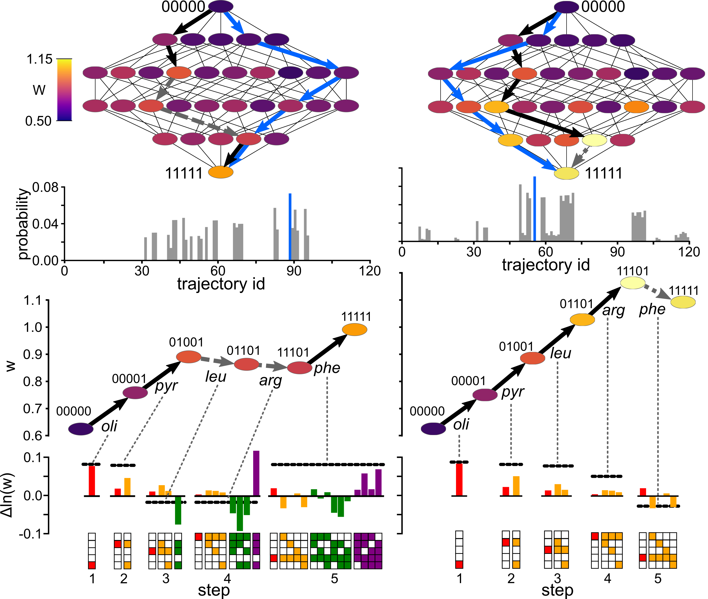
Conclusions
- Epistasis + time leads to evolutionary memory
- Experimental genotype-phenotype maps exhibit long-term memory (high-order epistasis)
- These high-order interactions shape evolution
- Long-term memory is a natural consequence of the ensemble nature of proteins (and other biological systems)
Harms Lab
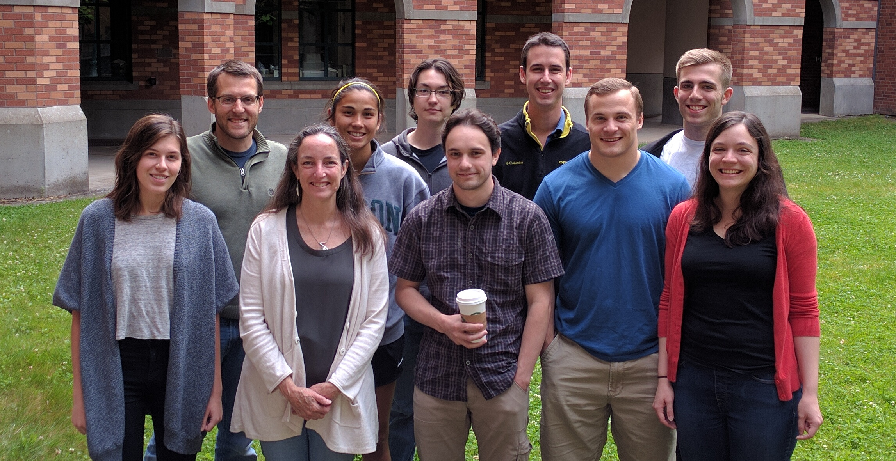